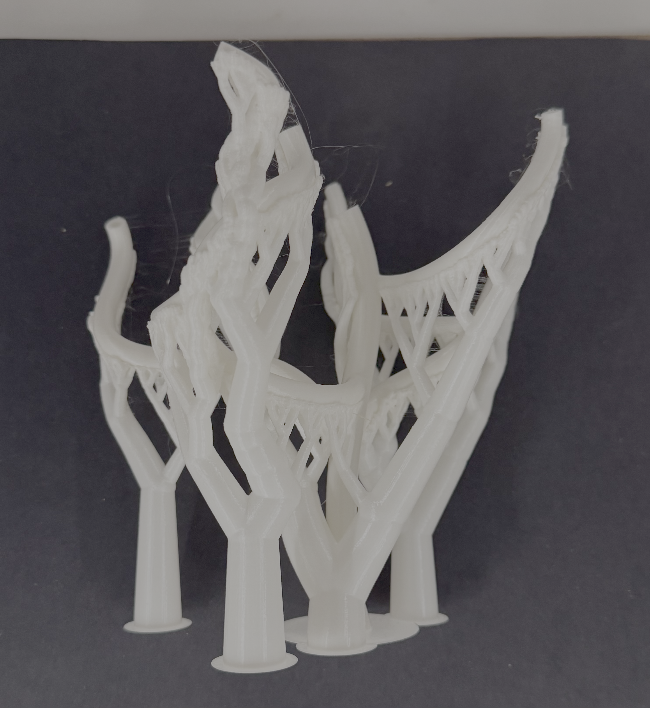
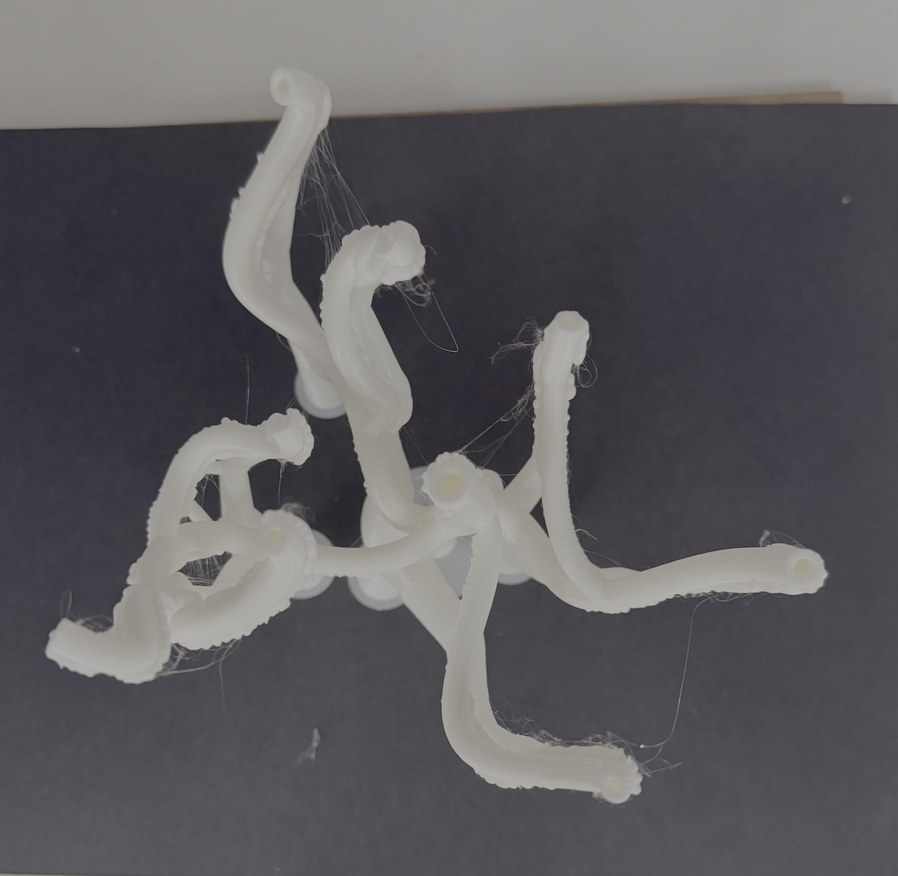
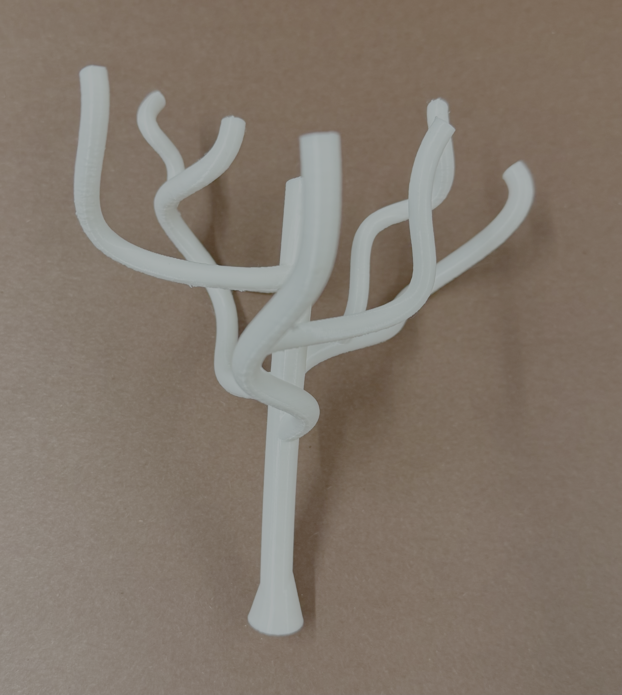
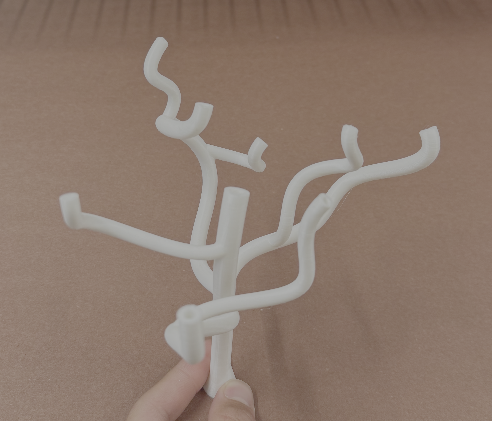
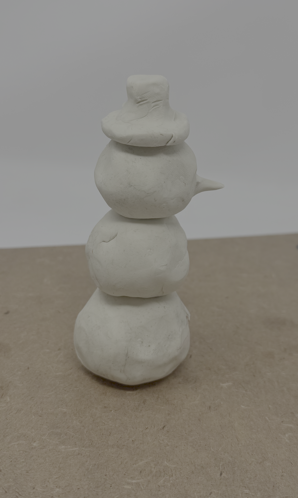
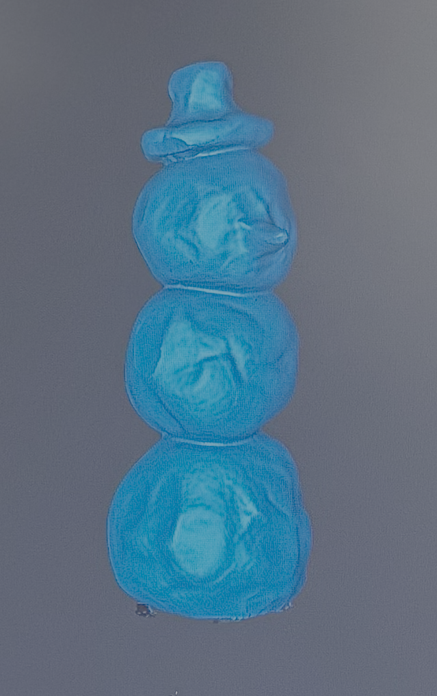

<div class="textcontainer">
<p class="margin"> </p>
<h3>Week 5: 3D Design & Printing</h3>
<br>
<h4 style="color:black;">3D Printed Tree Sculpture</h4>
<p style="color:black; font-size:18px;"> For the 3D printing part of this assignment I designed a tree, or tree-like sculpture some could say. I started by drawing splines in fusion and then moving them around in 3D to create branches. I then used the pipe function to trace these lines. I did the trunk the thickest for strenght, then branches coming off the trunk slightly thinner, and then branches coming off of those even thinner. Continuing off of my previous work, I wanted my structure to be completely hollow so that water could flow through it. The issue was that at every pipe intersection, the new pipe was blocked by the siding of the other one. To deal with this I used section analysis and went through my entire structue about 3 mm at a time, deleting these blocking pieces. I finished with a completely hollow structure. To avoid it printing supports on the inside, I drew the supports on in prusa slicer, which worked well. All in all, the print was just over sixteen hours, but came out very succesful. Below are some images of the printed tree before and after removing the supports. <p>
<p></p>
<p></p>
<p></p>
<p></p>
<br>
<p style="color:black; font-size:18px;"> The fusion model and prusa gcode for my sculpture can be dowloaded here. <p>
<p class="margin"> </p>
<div class="flexrow">
<a id="btn" href="clydeweek5tree.gcode" download> view gcode </a>
<a id="btn" href="week5tree.f3d" download> view fusion file </a>
<a id="btn" href="week5tree.stl" download> view stl file </a>
</div>
<p class="margin"> </p>
<br>
<h4 style="color:black;">3D Scanned Clay Snowman</h4>
<p style="color:black; font-size:18px;"> For the scanning part of this assignment I ended up using a clay snowman I made. I attempted three different objects, but was not getting great scans from any of them. Some were slightly too reflective and one had some dark black regions that the scanner seemed to be missing. The clay, however, scanned extremely well. It was even in color and not at all reflective. <p>
<p></p>
<p></p>
</div>